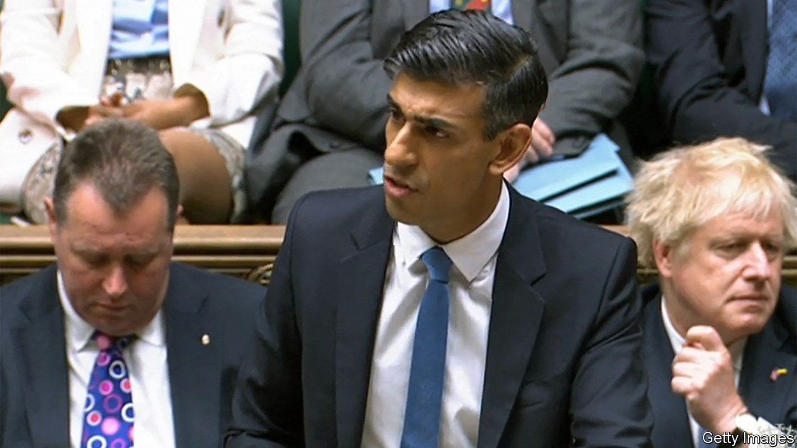
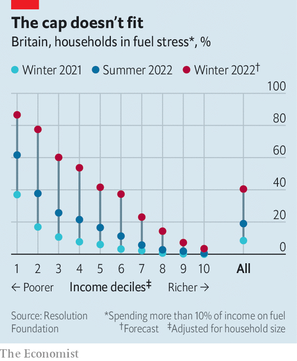

Rishi Sunak unveils a new plan to ease Britain’s cost-of-living squeeze
The Tories flip-flop on the merits of a windfall tax

On may 24th Britons got some grim but expected news from Ofgem, the energy regulator. In October their average annual energy bills will probably jump to around £2,800 ($3,505), over twice as much as a year earlier. In the absence of more government support, two in five households would then be spending more than 10% of their income on energy (see chart). That support is now, rightly, forthcoming. On May 26th Rishi Sunak, the chancellor of the exchequer, announced a package of measures to ease the burden of rising prices, and a one-off windfall tax on oil and gas companies’ profits to help pay for it.
Listen to this story.Enjoy more audio and podcasts on iOS or Android.
Listen to this story
Save time by listening to our audio articles as you multitask

The most important test for Mr Sunak was the extent to which he funnelled support towards the most vulnerable. On this score he did pretty well. The chancellor announced that households on means-tested benefits will be given an extra £650, to be paid in two lump sums, one starting in July and one in the autumn. Pensioners will get an extra payment of £300; the disabled will get another £150. In addition, the government will turn an already-announced discount on people’s energy bills worth £200, to be repaid over five years, into a grant of £400. In total, the new measures will cost £15bn.
More controversial is how Mr Sunak plans to pay for this largesse. The Treasury expects the 25% windfall tax, levied on top of the current rate of 40%, on oil and gas companies’ profits to raise around £5bn over the next year. (The rest of the package will be paid for with extra borrowing.) That represents a big u-turn.
Proponents of a windfall tax, led by the Labour Party, have long argued that it is both fair and efficient. Fair, because shareholders of oil and gas firms should not benefit from high oil prices caused by Russia’s war on Ukraine. Efficient, because a windfall tax is a one-off measure; affected firms would have neither the time nor the incentive to change their behaviour.
When a windfall tax was first mooted, the Conservatives themselves were opposed on the ground that it would chill investment just as energy companies should be committing more capital to combat climate change. Businesses would worry that the tax regime was becoming more arbitrary and less symmetrical, with a risk of additional taxes in good times and no relief from them in bad. “Unconservative,” said some.
The government has reversed its stance for political reasons above all: the policy is wildly popular. But it helps that in 1981 Margaret Thatcher, no socialist icon, taxed elevated bank profits, which, she wrote, were the “result of our policy of high interest rates rather than because of increased efficiency or better service to the customer”. Bernard Looney, the boss of bp, an energy giant, seemed to undermine the case against a tax when he told the Times that a windfall levy would not affect plans for up to £18bn of investment in Britain by 2030.
To mute its deterrent effect, the new levy will be lower for companies that invest in Britain. But it is not always easy for firms to put capital to work quickly. Alastair Syme of Citigroup, a bank, says that bp, for example, could put more cash into existing oil and gas facilities to raise capacity, but it’s “at the margin stuff”. New investments in the renewables sector are constrained by government-controlled factors like planning permission and licensing processes.
And even if a windfall tax could be designed in theory to preserve or sharpen incentives for short-term investment, it may still have a longer-term deterrent effect. Precise evidence in this area is frustratingly thin, partly because there have been so few windfall taxes but also because they are often introduced in unusual circumstances, making it tricky to tell what exactly caused any fallout. But there is plenty of research to show that general uncertainty crimps investment.
The government is fuelling such uncertainty itself. Although Mr Sunak did not include electricity generators in his new tax, he said that he would be “urgently evaluating” the scale of their extraordinary profits, too. Even if they end up avoiding extra tax, the fact that it is being considered at all will weigh on the minds of investors. The chancellor was right to announce new measures to ease the cost-of-living crunch, and to target support at the poorest. But the cost is a less predictable tax regime. ■